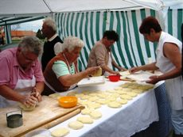

|
|
| Auf dieser Seite
zeigen wir überwiegend kalte Gerichte und Knabbereien, die
man meistens auf die Schnelle zwischendurch verzehrt. Es
sind z.T. vollwertige warme Gerichte. - Liptauer,
Lángos, Pogatscha und diverse Aufschnittplatten sind
ideale Vorbereitung auf die Verkostung von
direkt
vor Ort in einem der vielen Weinkellern des Landes oder auf
ein Erfrischungsgetränk, wie Spritzer (Schorle), Bier oder Ihr
Lieblingslimo.
gehört heute auch bei vielen christlichen Ungarn
gelegentlich auf die Brotzeitplatte. |
| |
| |
|
Holzbrettgericht bzw.
Brotzeitplatte / Fatányéros |
| |
| |
Die beste Brotzeitplatte, die wir in Ungarn je genossen haben,
wird im
in
am Balaton serviert, so wie am Bild oben links.
Autofahrer trinken alkoholfreie Getränke dazu, weil in Ungarn auf
allen Strassen Null Promille ohne Toleranz gilt. Die
folkloristische, tänzerisch-musikalische Unterhaltung im Eszterházy
Keller bleibt
ein unvergessliches Erlebnis ein Leben lang. Für Gruppen wird eine
Voranmeldung dringend empfohlen. Die anderen Bilder zeigen zwei
Varianten von Fatányéros, so wie sie bei
in Wien serviert werden. Am Bild in der Mitte ist eine
kalte Fatányéros Aufschnittplatte und rechts davon eine warme
Fatányéros Grillplatte auf
Siebenbürger Art zu sehen. Klicke auf die Bilder!
|
 |
In der Gastronomie wird Fatányéros
(dt. Brotzeitplatte) für Kleingruppen von bis zu 3-4-Personen zusammen
serviert. Man wird schneller satt, als man beim Anblick der Platte
denkt.
Die eigens für Fatányéros
(dt. Brotzeitplatte) handgemachten Holzplatten werden
aufgefüllt mit ungarischen Hausgemachten Speisen, wie Schinken,
Wurst, Gänseleber, Pastete, Käse, Gemüse, Früchte u.a. |
 |
Warme Brotzeitplatte
gibt es auch! In der bäuerlichen Küche beispielsweise so aus dem Backofen, wie am Bild links. |
| Besonders beliebt ist in Ungarn das Rindfleisch aus der Suppe, das man möglichst heiß mit Meerrettich,
evtl. mit Senf und Brot verzehrt. In der Rindfleischsuppe wird immer viel Gemüse, bevorzugt Karotten und Petersilienwurzel mitgekocht, auch das gehört auf die warme Brotzeitplatte.
Markknochen waren schon immer eine besondere Delikatesse. Dabei sind sie gesund und wirken kräftigend
auf den geschwächten Körper. Das Rindermark schmiert man am besten auf geröstete Landbrotscheiben, nur in Restaurants soll es elegant
sein, wenn man das pappige Toastbrot dazu bekommt. Auch schon
deswegen schmeckt eine solche Platte am besten zu Hause, wo man
all das direkt aus dem Topf heiß bekommt. In Ungarn ist das ein
genauso beliebter Genuss mit Bier, wie Brotzeit in Bayern - es
geht leider aus der Mode, weil die Restaurants wenig daran verdienen. |
 |
|
Liptauer / Liptai túró, Körözött |
| |
Der Liptauer oder Liptauerkäse ist
ein Brotaufstrich, vergleichbar mit dem bayerischen Obatzter.
Letzterer wird auch Obatzda, neulich immer öfter nur noch
Obazda genannt, weil die meisten Zugereisten Wirtshausgäste
mit dem Begriff Obatzter (Hochdeutsch: ein Batzen darauf)
nichts anfangen können. Während zum Obazda die gärfaulende
Schärfe von Camembertkäse
im letzten Moment
kurz vor dem Verderben mithilfe von Gewürzzutaten übertönt und somit abgemildert, bzw. gerettet wird,
verwendet man im Liptauer immer nur frischen Schafskäse, wenn verfügbar
Brindzakäse, einen pikanten Frischkäse aus Schafsmilch. Das
Rezept für Obazda entstand in einem Wirtshaus in Bayern
im Jahre 1920, so handelt es sich um die Abkupferung der
Rezeptur für den Liptauerkäse, der damals in Österreich und Bayern
schon lange gut
bekannt war. Das sollte hier ein Hinweis auf die
Missachtung der Gesundheit der Gäste in der bayerischen
Gastronomie aufzeigen, wo auch noch die Verwässerung der Obazda mit
billigem Bier oder Wein zugelassen ist für die
Wirtschaft und nicht für die Gesundheit der Gäste.
|
|
Das Rezept für den Liptauer entstand in
einer Zeit, als die Gegend noch bei Ungarn war, der Legende
nach etwa im 13. Jahrhundert. Die Bezeichnung Liptau hat
wenig mit der Region Liptau (heute Liptov in der Slowakei)
zu tun, er kommt aus der Erkenntnis, dass der Hirtenkäse aus
Schafsmilch zu diesem Gericht damals vorzugsweise aus der
Gegend von Liptau, nahe zur heutigen polnischen Südgrenze bezogen wurde.
Liptau liegt heute in der Slowakei und die nach eigener
Identität strebenden Slowaken versuchen in Ermangelung
dessen eine eigene Nationalspeise daraus zu erkoren und
dabei nicht realisieren wollen, dass die Grundlage für den
Liptauer der Brindzakäse eine Spezialität der Walachen ist,
die in früheren Jahrhunderten in den Karpaten nomadisierend
lebten, so auch in der Liptauer Gegend. |
|
Laut EU-Richtlinien ist Brindza heute ein
geschütztes Produkt in der Slowakei und auch in Polen und man staune: auch die nach eigener
Identität strebenden Rumänen behaupten, der Brindzakäse, die
Grundlage für den Liptauer sei ihre
Erfindung in einer Zeit, als ein Teil des heutigen Rumäniens
Walachei hieß und die meisten Walachen noch als in der
Römerzeit romanisiertes Volk
auf dem Balkan herumnomadisierten. So ist es kein
Wunder, wenn Brindza schriftlich zuerst im 15. Jahrhundert bei
Spalato, heute Split in Kroatien, genannt wird. Der Legende
nach soll jedoch Brindza bei den Slowaken schon früher bekannt
gewesen sein, als sie den Frischkäse von den in ihren Bergen
herumziehenden Schafshirten aus der Walachei bezogen. (Merke:
damals brauchte man noch keinen Reisepass für Grenzübertritt,
keine Betriebserlaubnis und es gab keine Zollgrenzen, wie
heute in der EU) Bei soviel Nationalismus sei auch genannt,
dass Bryndza auch in Russland bekannt ist und sogar einen
deutschen Namen hat: Brimsen. In Deutschland bietet die
russische Lebensmittelkette
Brimsen als "Bryndza Tscherkasska" an. Dieser
Name bezieht sich auf die Stadt Tscherkassy, südöstlich von
Kiew in der Ukraine. Es ist halt ein Frischkäse aus
Schafsmilch und unterscheidet sich von dem griechischen
Fetakäse lediglich darin, dass er nicht zusammengepresst,
sondern streichfächig locker zubereitet wird. |
|
|
Zutaten: 250 g Schafskäse Brimsen (Hirtenkäse), 250 g
Butter, 1 Bund Schnittlauch sehr fein kleingehackt oder
2 kleine rote Schalotten, 2 TL
edelsüßer Paprika, 1 TL rosenscharfer Paprika, 2 Prise frisch
gemahlener Kümmel
(aus dem Mörser oder der Gewürzmühle), 1 TL Salz, 1 TL Pfefferpulver schwarz, 1/2
Bund Schnittlauch fein gehackt, 1/2 Handvoll Petersiliengrün sehr fein kleingehackt.
Zubereitung: Zuerst den Schafskäse mit einer Gabel fein
zerbröckeln oder durch einen Sieb pressen, wenn man keinen
körnigen Frischkäse aus Schafsmilch bekommt. Außer
Petersiliengrün, Salz und Pffeffer alle Zutaten dazumischen
und cremig rühren.
Vom
Paprikapulver soviel dazu mischen, bis die Masse eine orangene Farbe
annimmt.
Jetzt wird die cremige Masse nach eigenem Gutdünken mit
Salz und Pfefferpulver abgeschmeckt und eine Nacht im
Kühlschrank aufbewahrt oder morgens zubereitet und abends
verzehrt.
Serviervorschlag:
Eine Stunde vor dem Verzehr aus dem Kühlschrank nehmen, bei
Zimmertemperatur ist der Liptauer streichfähig und schmeckt am besten. Beim Servieren Petersiliengrün
und/oder auch Schnittlauch darüber streuen. Dazu serviert man meistens ein Obstkompott, das
den Durst löschen soll, der weniger
von Paprika, vielmehr von Salz und Pfeffer her kommt...
Tipps für die eigene Hausküche: |
- Die Hälfte von
Butter wird in ländlichen Gegenden, wenn vorhanden, durch ca. 100 ml
Quark bzw. Topfen ersetzt. Davon soviel nehmen, dass die cremige Masse eine
kremig schwerflüssige, gerade noch streichfähige Konsistenz hat.
- Wer Schafskäse durch
körnigen Frischkäse aus Kuhmilch oder eine Mischung halb und
halb ersetzt, sollte ein TL Senf und/oder auch ein wenig
geriebenen Meerrettich verwenden.
- Butter kann
durch Margarine ersetzt werden, dadurch ist der Liptauer auch
aus dem Kühlschrank streichfähig, richtig duftend schmeckt er
aber auch so nur bei Zimmertemperatur.
- Im Originalrezept
steht Schnittlauch, stattdessen setzt sich in Ungarn die lilarote
Zwiebel
durch, ebenso geeignet ist die Schalotte.
- Wer Liptauer nicht zum ersten Male zubereitet, nimmt es nicht
mehr so genau mit den Gewürzen, vor allem sollte man Paprika- und Pfefferpulver
nach individuellem Bedarf
verwenden, aber Kümmel gehört immer dazu. Wichtig ist die
Streichfähigkeit.
- Wer die Körner zwischen den Zähnen nicht mag, kann
auch gemahlenen Kümmel verwenden, aber ungemahlen schmeckt der
Kümmel intensiver.
- Salz immer vorsichtig beimengen, denn der
Schafskäse aus dem Supermarkt enthält bereits etwas Salz, oft ziemlich viel.
- Pfeffer - Schafskäse gibt es
stark unterschiedlich, von würzig bis neutral schmeckende.
Dementsprechend benötigt er mehr oder weniger
Pfefferpulver.
|
|
|
|
Nürnberger Krapfen, Berliner Pfannkuchen u.a. / Fánk |
| |
Auf die Rezeptur des Nürnberger Krapfens verzichten wir hier,
weil dieser Feiertagskuchen in Deutschland genauso gut bekannt
ist, wie in Ungarn. Wir zeigen den Krapfen, weil er der
Ursprung der folgenden, vermeintlich ungarischen Spezialität
ist.
Die Rezeptur machte einen Bogen über Berlin, wo man daraus den
Berliner Krapfen erkor, der auch Berliner Pfannkuchen oder
einfach nur Berliner genannt und mit Marmelade beschmiert oder gefüllt wird.
Küchle und den Berliner Pfannkuchen haben die
Donauschwaben in der neuen Heimat eingebürgert. Nur weil die
Ungarn Pfannkuchen und Küchle nicht aussprechen können, erfand man Fánk
aus Pfannkuchen und Küchle wurde als Lángos übersetzt, weil es
nur heiß wie die Flamme schmeckt. |
 |
|
Küchle, Knieküchle, Ausgezogene, Bauernkrapfen / Lángos |
| |
Im Schwabenland weit verbreitet ist Küchle, aber wer weiß
schon in Deutschland, dass dieser im Fett gebackener Hefeteigkuchen, den die Ungarn den Touristen
so
herzlich gern als ihre Nationalspeise "Lángos" zum Probieren
aufschwätzen versuchen, in der fränkischen Schweiz schon im
Mittelalter Bauernkrapfen, Ausgezogene und im Schwabenland
Küchle oder
hieß? Ja sogar von Bayern
bis ins Burgenland gut bekannt als Bauernkrapfen und dort wird
er an Feiertagen aus der eigenen Küche mit Puderzucker
aufgetischt oder an Jahrmärkten auch mit einer Knoblauchtunke beschmiert.
|
|
Die
Popularität in Ungarn verdankt der Lángos einer Armutszeitperiode während der roten Ära. Lángos ist heute in Ungarn besser
bekannt, als Knieküchle oder Bauernkrapfen in Deutschland -
einfach aus Geldgier der Marktbudenbetreiber, gepaart mit der Armut
der Konsumenten, die sich nichts besseres leisten können. Die
neuzeitlichen Gastarbeiter aus Ungarn, vor allem die
existenzgründenden Marktbudenspekulanten vergöttlichen diesen
allerbilligsten Sattmacher aus der Armenküche, als wäre der
Bauernkrapfen eine ungarische Erfindung. Ihrem Geldgier ist es
zu verdanken, dass der ungarische Lángos heute mit diversen
Belägen, wie Quark, Käse und sonstigen Schmierstoffen, die die
wenigsten Mägen vertragen, möglichst teuer, ja sogar zu
Restaurantpreisen angeboten wird, Hauptsache die Kasse stimmt. Billig,
fett und
kalorienreich ist er allemal, dabei benötigt seine
Herstellung viel weniger Zeit und Kenntnisse, als eine Pizza. |
 |
|
Wie sehr sich die weniger gebildeten Ungarn auf dem Holzweg
befinden mit ihrer Behauptung, Lángos wäre eine ungarische
Erfindung, zeigt das Frybread bei den Navajo Indianern, das
sich in nichts vom Lángos unterscheidet. Vielleicht, dass die
Indianer Backpulver statt Hefe zum Hochgehen des Brotteiges
verwenden. Alle
Indianerstämme in Nordamerika haben ihre eigenartige Beläge für das Frybread.
Die nördlich und nordwestlich lebenden Stämme bezeichnen ihr
Frybread als Bannock, das gebraten oder an Festtagen gebacken
wird und wie der Bauernkrapfen zum Feiern mit Puderzucker
bestreut wird. |
 |
| |
Der Nürnberger Krapfen wird im Nürnberger Land traditionell
von Frauen zubereitet, aber ganz clever. Sie überlassen die
harte Arbeit den Männern, die den Teig sitzend übers Knie auf
der Lederhose zum Fladen kneten und so bleibt die Mitte immer
dünn und so ist der bayerische Ausgezogene in der Mitte eine knusprige
Köstlichkeit. Knieküchle hat viele Namen: Kiachle, Küchle, Knieküchle,
Nürnberger Krapfen, Schmalzgebäck. Von der Art der Bearbeitung
her kommt eine weitere Bezeichnung als Auszogene bzw. Ausgezogene hinzu, wie
im folgenden Video gezeigt wird. Ausgezogene bezeichnet man
Knieküchle heute etwa von Mitte Bayern bis nach Wien als
Bauernkrapfen und weiter östlich bis in den Banat die
Donauschwaben.
Bekanntlich geraten alle Traditionen einmal in Vergessenheit,
so weiß die Kathi im Bayerischen Fernsehen heute nicht,
dass das Kneten früher eine Männerarbeit war und verwechselt
eine Lederhose mit ihren Damnestrümpfen. Dabei hat sie
das Rezept für Ausgezogene von ihrer Mutter gelernt, womit sie im
folgenden Video mit einem Augenzwinkern angibt. Ihr sei zugute gesagt, dass sie mit
ihrem Dialekt fernab vom Nürnberger Land aufwuchs:
|
|
|
|
|
|
Knieküchle in Bayern und Krapfen in Berlin werden seit eh und
je mit Puderzucker bestreut und traditionell zu Fasching,
Silvester und sonstigen Feierlichkeiten zubereitet. Das kennt
man in Ungarn genauso beim Berliner Pfannkuchen, den man in
Ungarn nur kurz als Fánk bezeichnet. Knieküchle, der Lángos war in
Ungarn lange Zeit pur oder mit einer Knoblauchtunke beschmiert
und kräftig gesalzen. Weniger bekannt ist heute die Variante
mit Kraut, die am besten mit Puderzucker bestreut schmeckt.
Heute wird der Lángos in Ungarn mit laufend neuen
Köstlichkeiten belegt, angefangen von der traditionellen,
gesalzener Knoblauchtunke über Marmelade bis zu den
verschiedenen Pizzabelägen.
|
Dass man den Nürnberger Krapfen bzw. Knieküchle auch ohne
Lederhose kneten kann und dann von den Bayern Ausgezogene
genannt wird, beweist der Siegeszug dieser
fränkischen Landesspezialität in Ungarn, wo Lángos ein reines
Frauenprodukt à la Ausgezogene ist und dessen Produktion Sie an einem
ungarischen Jahrmarkt an den folgenden Bildern sehen:
|
 |
| Kirmesbäckerei in Ungarn
- Bilderquelle:
|
Die wenigsten haben
davon je gehört, aber südlich von Rosenheim oben im
Wendelsteingebirge kennen die Kuhbauer
(sprich: Kiachä). Das
Rezept und die Zutaten zum Kiachle sind mit "Lángos pur"
(siehe weiter unten) absolut identisch. Bei
den Kuhbauern kommt es in erster Linie auf die Verwendung von
Milchprodukten, wie Milch
und Quark an. Kiachle wird, im Gegensatz zum Lángos pur im Ofen
in handtellergroßen Stücken gebacken und als Fladenbrot, z.B. zur Gemüsesuppe gegessen.
Die Bezeichnung Kiachle
stammt wahrscheinlich aus der alten indogermanischen Heimat im heutigen
Länderdreieck Indien, Pakistan und Afghanistan, wo er heute
genauso bekannt ist, wie bei den Kuhbauern im
Wendelsteingebiet.
Sprachwissenschaftler fanden heraus, dass Kiachle heute in
Pakistan einen dialektartig mit Kiachä vergleichbar
ausgesprochene
Bezeichnung hat. Der Ursprung von Kiachle wird daher in der
alten indogermanischen Heimat der Oberbayern vermutet.
|
Der Nürnberger Krapfen
bzw. Knieküchle hat seinen Weg zuerst nach
Berlin gebahnt und dort entwickelte sich die gleiche, jedoch
gezuckerte Rezeptur zum Berliner Pfannkuchen, der anderswo
schlicht nur Krapfen, Berliner- oder Weihnachtskrapfen genannt
wird. Der Berliner Pfannkuchen bzw. Berliner Krapfen wird in
Ungarn schlicht nur Fánk genannt, weil mit ungarischer Zunge
Pfannkuchen kaum auszusprechen ist.
Warum der
Weihnachtskrapfen in Ungarn von den Donauschwaben traditionell
zu Ostern aufgetischt wird, das hat den gleichen katholischen
Hintergrund, wie in Bayern.
Warum der Krapfen in Ungarn Lángos
(=flammig) bezeichnet wird, das kann man nur vermuten,
weil das mit dem heißen Fett zu tun haben könnte, indem Lángos
gebacken wird - und Lángos nur heiß serviert
schmeckt.
Knieküchle im Schwabenland und Nürnberger Krapfen aus dem
Frankenland kommen meistens aus dem Backofen, mancherorts
werden sie im Fett gebacken - ganz ähnlich, wie der Berliner
Krapfen - und werden anschließend mit Puderzucker überstreut. Lángos in Ungarn wurde früher ausschließlich mit einer
Knoblauchtunke bestrichen und kräftig gesalzen serviert - bis
die DDR-Rucksacktouristen mit ihren ungewöhnlichen Wünschen
die Lángosbuden nach Berliner Vorbild reformierten.
|
Übrigens: was die Ungarn
nicht vorstellen können - ihre vermeidlich ungarische
Nationalspezialität wird in kanadischen Imbissbuden in der
kalten Jahreszeit
von den Indianern als ihre eigene Spezialität angeboten und
ebenso von ihren seit Jahrtausenden getrennt lebenden
Verwandten in Sibirien, gezuckert oder gesalzen. - Da bleibt nicht viel Raum für
Erklärungen über den Ursprung dieser "ungarischen
Landesspezialität".
Lángos galt schon
immer als Armutszeugnis und war in Ungarn
praktisch unbekannt. Erst als in der sozialistischen
Armutsära die privaten Lángosbuden um
den Plattensee herum sich als
Goldgruben erwiesen, machte Lángos seinen Siegeszug. Zuerst
berichteten die Balaton-Urlauber von den Lángosbuden, wo man
etwas warmes billig essen kann, dann
fragten die meisten, was ist Lángos überhaupt? Das Volk war
arm und der Lángos billig, so machten die Masse der
Plattensee-Wochenendausflügler und DDR-Rucksacktouristen in den
wenigen Sommermonaten das Geschäft.
|
Als der Plattensee sich in den 1960er Jahren zum Ziel des
jugendlichen Massentourismus entwickelte, schossen die Lángos-Verkaufsstellen
aus dem Boden, wie Pilze nach jedem Regen, weil sie die
Goldquelle für Ihre Betreiber waren. Die einfache Arbeit bei
der Herstellung aus billigen Zutaten ist eine ansehnliche
Schau, zugleich etwas umständlich in der eigenen Küche. - Ein
weiteres Armutszeugnis lieferten die meist jungen
DDR-Rucksacktouristen (mit Konservendosen im Pack) etwa ab
Anfang der 1960er Jahre am Balaton (Plattensee). Sie verfügten
bekanntlich über eine geringe, stark regulierte Menge an
Fremdwährung für die Auslandsreise und nur das wenigste davon
konnten sie für die Ernährung in Ungarn ausgeben, damit genug
Geld für die in der DDR begehrten, aber dort wegen
Devisenmangel nicht erhältlichen Jeanshosen aus dem Westen
übrigblieb. Oft nahm man Opa und Oma im Zug bis Prag mit, sie
fuhren zurück, aber ihre Devisen gaben die Jugendlichen in
Ungarn aus. Der Kleidermarkt von Siófok am Balaton war das
Geheimziel, dort kannte man alle Wünsche der Ostdeutschen. Die
Jeans mussten unbedingt von der Marke Wrangler oder Levy
Strauss sein, das verlangte damals der Modetrend. Wer kenn
diese Marken heute noch?
Warmes Essen und billig war nur der Lángos in den Buden am
Plattensee und dort staunten die Ungarn, wie die Ostdeutschen
statt Knoblauchtunke Marmelade auf den Lángos schmierten - zum Entsetzen der Ungarn
- aber so wurde Lángos zu einer ergiebigen, kalorienreichen,
billigen und warmen Mahlzeit. Das war der Anfang vom Ende der
ursprünglichen Lángos-Varianten in Ungarn. Seit eh und je kräftig
gesalzen und höchstens mit einer Knoblauchtunke bestrichen
oder Krautlángos mit Puderzucker,
gibt es heute laufend neue Ideen für den Belag. Vorbei sind
die Zeiten mit billiger Marmelade, immer
öfter wird Lángos mit Sauerrahm, Käse und Schinken belegt,
neuerdings machen Ketchup und verschiedene Pizzasaucen sogar
auf mexikanische Art das Rennen – die Phantasie in der Küche
ist ja grenzenlos und die neuen Beläge stoßen auf offene Ohren
bei den Betreibern der Lángos-Verkaufsstände,
weil sie
bei wenig Arbeit wesentlich größere Einnahmen
ermöglichen als Lángos, der Bauernkrapfen, wenn er tatsächlich nach Lángos
schmeckt.
|
| |
|
LÁNGOS-Zutaten nach Grundrezept im Vergleich mit PIZZA |
|
LÁNGOS |
PIZZA |
| 500 g
Mehl |
450 g Mehl |
| 1
Pkg Hefe oder Trockenhefe |
1 Pkg Hefe oder Trockenhefe |
| 250 ml
Milch |
240 ml Wasser |
| 100 ml
Sauerrahm |
1 EL Speiseöl |
| 1/2 TL
Salz |
3/4 TL Salz |
| 1 TL
Zucker |
2 TL Zucker |
Den Unterschied im Hefeteig erklärt der Fachmann
so: Der Teig für Lángos bleibt durch die Zugabe der
Milchprodukte bis zu 5 Tage lang
frisch erhalten im Kühlschrank. So muss man nicht alles gleich
verbrauchen, täglich frische Einzelportionen sind
möglich. Der Lángosteig geht höher, die Fladen werden
luftiger und erscheinen leichter. So kann der Teig
besonders knusprig gebacken werden. Das gilt für zuhause.
Eine solche Lagerung von Milcherzeugnissen ist jedoch in der
EU-Gastronomie verboten. Sollte alles gleich
verbraucht werden oder bei Milchallergie kann man die Zutaten für Pizza -
ohne Milchprodukte - auch für Lángos verwenden. Lángos
ist eben ein Kuchen aus Hefeteig. |
| |
| Es gibt grundsätzlich drei
Lángos-Varianten: |
- Lángos pur - mit
den Zutaten vom obigen Grundrezept, identisch mit
Knieküchle von Bayern bis Wien und noch weiter in Ungarn
und Banat bei den Donauschwaben.
Zubereitung:
Hefeteig aus den o.g. Zutaten kneten, halbe Stunde lang
ruhen bzw. gehenlassen. Erneut kurz kneten, einzelne
Fladen formen und in einer Pfanne oder Topf mit Raps- oder Sonnenblumenöl
bei 175°C frittieren oder in einem Backofen überbacken. -
Früher frittierte man im Schmalz.
Zubereitung einer Knoblauchtunke: Einige Knoblauchzehen
fein hacken, in einem Glas mit kochendem Wasser
überschwemmen, über Nacht an einer kühlen Stelle ziehen lassen.
Serviertipp 1: Lángos aus dem Backofen oder
der Bratpfanne werden mit Puderzucker bestreut verzehrt,
wie Knieküchle im Schwabenland und schmecken genauso, wie
die Krapfen bzw. Berliner Pfannkuchen, die in Ungarn Fánk
genannt werden.
Serviertipp 2: Lángos werden
typisch ungarisch, wenn man sie mit einer Knoblauchtunke bepinselt und kräftig
salzt - möglichst mit Steinsalz.
Vermerk: Lángos mit einer
Knoblauchtunke ist wenig lukrativ für die
geschäftshungrigen Budenbetreiber, die in letzter Zeit
massenhaft in die westliche Länder schwemmen. Sie sind bei uns die ärmsten
unter den Zugereisten und so wird die Knoblauchtunke
selten/ungerne angeboten. -
Das Backen von Lángos erfordert teure Ausrüstung, sprich
Backofen, den die meisten Budenbetreiber sich nicht
leisten können oder wollen für die wenigen Jahrmärkte und
die gebackenen Lángos geraten daher allmählich in Vergessenheit.
Den Lángosbudenbetreibern ist die Originalversion mit
Puderzucker oder Knoblauchtunke wenig lukrativ, so versuchen sie
den Jahrmarktbesuchern allerlei, vermeidlich terure Beläge aufzuschwätzen.
|
- Kartoffel-Lángos
- 1/3 vom Mehl im Grundrezept wird durch
Kartoffelbrei ersetzt.
Zubereitung: Man mische (in etwa 1 zu 3
Verhältnis) 125 g Kartoffelbrei zu 375 g Weizenmehl. Statt Kartoffelbrei
wird oft Kartoffelmehl zugemischt, geknetet, nach
einer halbstündigen Gehzeit erneut kurz geknetet. Daraus
werden einzelne Fladen geformt und frittiert oder
gebacken. Frittiert wird in einer Pfanne oder Topf mit
Raps- oder Sonnenblumenöl bei 175°C.
Zubereitung der Knoblauchtunke: Einige Knoblauchzehen
fein hacken, in einem Glas mit kochendem Wasser
überschwemmen, über Nacht an einer kühlen Stelle ziehen lassen.
Servieren: Vor dem Verzehr wird auch die
frittierte Lángos-Variante mit einer Knoblauchtunke bestrichen und kräftig
gesalzen. Lángos aus dem Backofen wird mit
Puderzucker bestreut serviert.
Vermerk: Auch
hier gilt der vorherige Vermerk: Den Lángosbudenbetreibern
ist die Originalversion wenig lukrativ, den
Jahrmarktbesuchern versuchen sie allerlei, vermeidlich
terure Beläge aufzuschwätzen.
|
Im folgenden Video zeigt ein Fachmann die häusliche
Zubereitung von Kartoffel-Lángos. Seine englische Erklärung
entspricht unserer Beschreibung der Zubereitung.
|
|
|
|
|
|
| |
- Kraut-Lángos -
1/3 vom Mehl im Grundrezept wird durch geraspelt
kandierten Weißkohl ersetzt.
Zubereitung: Weißkohl zerreiben und in einer Pfanne im heißen Öl
glasig werden lassen, mit wenig Salz, Pfeffer und Zucker
abschmecken. Von dem kandierten Weißkohl
wird (in etwa 1 zu 3 Verhältnis) 125 g zu 375 g Weizenmehl
gemischt und zum Teig geknetet. Nach einer halbstündigen
Gehzeit erneut kurz kneten, in einzelne Fladen formen und
im Backofen überbacken, evtl. frittieren, dann aber das Öl
gründlich abtupfen.
Servieren: Vor dem Verzehr mit Puderzucker bestreuen.
Diese Variante schmeckt nur so, knusprig fein, ideal zum
Kaffeekranz.
Vermerk: Diese Lángos-Variante
ist besonders arbeitsintensiv, lässt sich mit teuren
Zutaten nicht belegen, ist daher am wenigsten lukrativ für
die geldgierigen Lángosbuden und wird daher an den
Jahrmärkten nicht mehr angeboten. Die Jugend
kennt diese Variante nicht mehr, dabei ist Kraut-Lángos
das Beste für Feinschmecker. Der Arbeitsaufwand lohnt sich
daher in der eigenen Küche, wo man dafür mit einer herrlichen
Köstlichkeit belohnt wird - ein Traum für Feinschmecker.
|
FAZIT: An der Zubereitung der
drei Lángos-Varianten hat sich bis heute nichts geändert,
umso mehr daran, womit man den Hefeteigfladen belegt. Das
Entwicklung begann Anfang der 1960er Jahre,
als man mit Marmelade anfing. Heute werden alle
erdänkliche Beläge verwendet, die Lángos auf den ersten Blick mit Pizza
vergleichen lässt. - Den Unterschied macht heute - zumindest
auf den Jahrmärkten - der Backofen aus. Pizza überbackt man
mit dem Belag zusammen, auf heiße Lángos schmiert oder
streut man meistens einen kalten Belag - immer öfter nach dem
Angebermotto "Hauptsache etwas Neues".
Lángos am
Jahrmarkt ist eine Gelegenheit für ein Treff
von Leuten, die sich kaum kennen und hat sich dazu
entwickelt bei den zugereisten Ungarn, die existenziell
auf labilen Füßen stehen. Lángosbudenbetreiber in
westlichen Ländern sind meist Existenzgründer und Spekulanten, selten
Fachkräfte und daher vor allem geldgierig. Sie frittieren fast immer, weil
ihnen die Ausrüstung für die Zubereitung der gebackenen
Lángosvarianten fehlt. Sie schmieren laufend neue Beläge
auf Lángos, wodurch das kruspige Feiertagsgebäck allmählich
zum billigen Ersatz für Pizza an den Imbißständen wird.
Ausgerechnet die besonders feinen Lángos-Varianten meiden die
geldgierigen Budenbetreiber, weil diese mehr
Arbeitsaufwand und gastronomische Fachkenntnisse erfordern.
Wichtig: Lángos ist beliebt in Ungarn als
eine knusprige Köstlichkeit. Der Lángos wird in der Mitte dünn
ausgezogen, damit er in der Mitte noch knuspriger ist. Wenn
man einen Belag jeglicher Art darauf schmiert, ist der gesamte
Lángos nicht mehr knusprig, sondern ein billiger Pizzaersatz. Die heutige Jugend
kennt die wahren Köstlichkeiten kaum noch.
Lángosbudenbetreiber versuchen die billigsten Fladen mit
vermeidlich teuren Zutaten zu belegen und auf die Schnelle
möglichst teuer zu verkaufen. Feingeschmack
und fachliche Qualifikation der Budenbetreiber ist nicht zu erkennen,
wenn sie sowas den Jahrmarktbesuchern als Lángos aufschwätzen - aus purer
Geldgier, aber wer spricht schon darüber?
Dabei ist die heimische Zubereitung von
Lángos sehr einfach und kostengünstig. Wer einmal
Pizzateig geknetet hat, kann auch daraus Lángos braten
oder backen. Eine Portion bzw. einen Fladen etwas üppiger
belegt bekommt man an Jahrmärkten für 3-5 Euro. Für den
gleichen Preis kann man zuhause bis zu 20 Gäste
bewirten, nach bewährtem Hausrezept bedienen und man
vermeidet so das Risiko der Jahrmärkte, wo man sprichwörtlich nach der
Redensart "nach uns die Sinnflut" bedient wird. Zuhause kann
man die feinsten Lángos-Varianten servieren, die
man an Jahrmärkten nicht mehr bekommt - von wegen Geldgier!
|
| |
|
Über die Herkunft des uralten ungarischen Wortes Pogácsa
(sprich: Pogatscha) streten sich schon lange die Gelehrten,
denn "Pogácsa" ist sicherlich nicht von ungarischem
Ursprung. Sprachwissenschaftler vermuten den Ursprung im italienischen Küchengebäck
Focaccia, das ähnlich ausgesprochen wird und mit einer
vergleichbaren Rezeptur auftrumpft. In englischsprachigen
Ländern ist Pogatscha ein Muffin. In Österreich als
Pogatscha bekannt, in Deutschland könnte man es
als eine Art Schmalzgebäck bezeichnen
- ein Happen zwischendurch.
|
| |
 |
Pogatscha ist ein
fettreicher Hefeteigkuchen,
wird wie Blätterteig gebacken und gilt als
Leckerbissen zwischendurch. Sie stehen als Lockmittel in
vielen Lokalen
griffbereit wie Chips oder Salzstange bei uns, gelegentlich auch zuhause und
dienen als Basis für ein Getränk, ferner für einen dicken
Bauch, wenn man den eigenen Maß nicht beachtet.
Die
häufigsten
Zutaten-Varianten im Teig sind Kartoffel, Kraut oder
Grammel.
|
|
Grammelnpogatscha / Töpörtyűs pogácsa |
| |
 |
Zutaten: 350
g fein gehackte Grammeln, 450 g
Mehl, 1 Hefewürfel, 0,1 l Milch (zum Auflösen der Hefe), 1 Ei, 1 Eidotter, 3 EL Sauerrahm, 0,05
l süßer Weißwein, Salz, Pfeffer und Ei zum Bestreichen.
Zubereitung: Die Hefe in lauwarmer Milch mit wenig
Mehl und Salz auflösen und kurz zu einem Vorteig bzw. Dampfl
gehen lassen. |
|
|
Die Grammeln fein hacken, auf einer
Arbeitsfläche
mit Mehl vermengen und aus der Hand abbröseln. Ei, Dotter, Sauerrahm, Wein,
Gewürze dazugeben und gemeinsam mit dem aufgegangenen Vorteig
zu einem Teig verkneten.
Den Teig dünn ausrollen und
wieder zusammenschlagen. Diesen Vorgang 2-3 mal wiederholen
und dann an einem warmen Ort ca. 30 Minuten gehen lassen. |
 |
Den
Teig 2 Fingerdick ausrollen, auf ein gut gefettetes Blech
oder Backpapier legen, die
Oberfläche der Pogatschen mit einem scharfen Messer karoförmig einritzen.
Ca. 30 Minuten lang mit einem
Küchentuch bedeckt ruhen lassen. |
 |
Mit
einer runden Form kleine Krapfen von 4-5 cm Durchmesser
ausstechen, mit verquirltem Ei bestreichen
und...
...bei 180°C ca. 15 Minuten goldgelb backen. |
|
Grammelnpogatscha mit Kraut / Káposztás pogácsa |
| |
Zutaten:
300 g Gänsegrammel, 400 g Mehl, 40 g Hefe, 1 kleiner
Kopf Weißkohl, 2 Eier, 1 EL Schmalz, Salz, Pfeffer und 1 Eidotter
zum Bestreichen.
Zubereitung: Weißkohl kleinschneiden,
salzen, pfeffern und auf Schmalz dünsten. Gänsegrammel durch den Fleischwolf drehen und mit den anderen Zutaten gut durchkneten. Auf
2 Fingerdicke ausrollen, mit einem runden Form von 4-5 cm
Durchmesser ausstechen und auf ein gut gefettetes Backblech oder
Backpapier legen, die Oberfläche karoförmig einritzen und 30
Minuten ruhen lassen. Mit verquirltem Ei bestreichen und bei 180°C
ca. 15 Minuten goldgelb backen. |
| |
| |
|
Kartoffelpogatscha / Krumplis pogácsa |
| |
Während andere Pogatschas aus Hefeteig schichtweise wie
Blätterteig geknetet werden, die Kartoffelpogatschas rollt
man vor dem Ausstechen nur einmal aus, weil sie nicht so
hoch aufgehen.
|
 |
Zutaten:
1 kg mehlig kochende Kartoffeln, 500 g Mehl, 200 g Schmalz, 1
geh. EL Salz.
Zubereitung: Kartoffeln in Salzwasser weichkochen und noch warm durch eine
Kartoffelpresse drücken. Auf einem Küchenbrett alle Zutaten
durchkneten und daumendick ausrollen. Mit einem 4-5 cm
Kuchenstecher den Teig ausstechen und direkt auf einem
bemehlten Backblech oder Backpapier verteilen. Die Oberfläche karoförmig einritzen und 30
Minuten ruhen lassen. Mit verquirltem Ei bestreichen und bei 180°C
ca. 15 Minuten goldgelb backen. |
|
Kümmel- und Käsestange /
Köménymagos és sajtos rúd |
| |
ein Leckerbissen zwischendurch - auch in
Deutschland bekannt, eher im Süden
|
|
|
Zutaten: 500 g Mehl, 250
g Margarine, 1 EL Salz, 200 ml Sauerrahm.
Für
die Glasur: 1 Eidotter, Salz, Kümmel, evtl. auch Reibekäse.
Zubereitung: Alle Zutaten kneten und ca. 2
Stunden lang in den Kühlschrank stellen. Danach den Teig mit
einem Teigroller 1/2 cm dick ausrollen, mit dem Eigelb
bestrechen. Einen Teil mit Salz und Kümmel bestreuen, die andere
Hälfte mit Kümmel und evtl. auch mit Reibekäse. Die Teigplatte mit
einem gewellten Teigschneider in ca. 2x10 cm Streifen
schneiden, auf Backpapier auf einem Backblech verteilen und in
einem auf 180°C vorgewärmten Backofen 10-15 Minuten lang
überbacken. |
| |
| |
Ungarn-Tourist Team

|
| |
 |
| |
|


 Sie
wollen endlich mal ein Gulasch nach
Originalrezept in Budapest genießen. Dann nichts wie hin.
Sie
wollen endlich mal ein Gulasch nach
Originalrezept in Budapest genießen. Dann nichts wie hin.